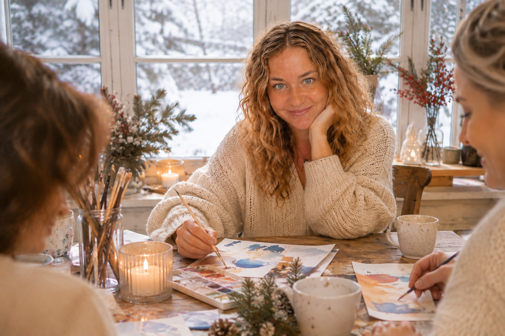

Место для нового — онлайн
Небольшая встреча из дома: мягкое подведение итогов года, образы и метафорические карты. Подготовь бумагу и ручку, чтобы записывать то, что откликается.
Дата и ссылка на подключение — после объявления расписания.
Предварительная запись